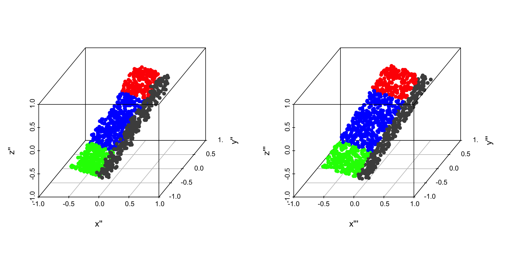

This is a primer on rotations and quaternions, as needed to describe rotations. Rotations are a constant source of confusion and they have confused me several time. This is kind of a letter to my future self.
This is Work in Progress TODOS
Still need corrections.
Add arrows showing coordinate system to plane plot
In the figure, you can see a sketch of the situation for gesture recognition. We are interested in “the relative positions” between the palm and thumb on the one side and the laboratory system on the other. As we will see this (and many more things) can be described in the framework of rotations.
Figure 1: Rotations transform between coordinate system, such as a fixed coordinate system in space (toothpicks on table), a body centered coordinate system on the thumb and one on the plam.
1.1 A first rotation
Before we go into some math, lets have a first look how a rotation might look like. On the left side you see data points in the original space. On the right side a rotation by 45 degrees around the z-axis that have been applied to the points. This rotation can be obtained by a rotation matrix R:
Left: orinial data. Right: data rotated by 45 degrees around y-axis (or coordinate system rotated by -45) degrees. The y-axis points up and the rotation is done in counter clock-wise manner
Code
#It's vector times Matrix for row-vectors#Therefore we have to transpose (R x) to x^T R^Tp3d(rabbit %*%t(R), h=NULL)
Left: orinial data. Right: data rotated by 45 degrees around y-axis (or coordinate system rotated by -45) degrees. The y-axis points up and the rotation is done in counter clock-wise manner
Code
par(mfrow=c(1,1))
1.2 Introduction
Rotations between rigid objects can be described as a linear transformation from one coordinate system to another, with the same origin. A first example is the bunny from above. Another similar example of such a rotation is the orientation of your cell phone after you picked it up compared to the position on the table, or the orientation of the thumb in figure compared to the coordinate system of the palm.
A very illustrative example is an airplane which is at \(t=0\) on the ground and is at \(t=t\) in the air. Besides the translation, the orientation of the plane at \(t=0\) relative to the plane at \(t=t\) can be described by a different heading (the yaw angle) obtained while taxing, the pitch angle obtained in the climbing phase and a rotation around the axis of flight the roll angle. During this phase many rotations happen but they can all be summarized in a single rotation.
1.3 Parameterization
1.3.1 Definition of rotations
Rotations can be seen as linear transformation from one coordinate system into another. But there are several way to parametrize them. The first is via a rotation matrix.
1.3.2 Rotation matrix (general properties)
In principal a rotation is given by the 9 matrix elements of \(R\). However they cannot be arbitrary, they still need to describe rotations. What are the defining properties of rotations? It turns out that a rotation, has an inverse and the inverse simply the transposed \(R^{-1} = R^T\) (this is the orthogonality). Further, \(det(R)=1\) this is a consequence that the volume in the rotated system stays constant and also the orientation (it’s \(det(R)=1\) and not just \(|det(d)|=1\)). So in matrix notation a rotation is defined by
Multiplying two rotation matrices \(R_1\) and \(R_2\) is a again a rotation matrix, this is why rotations in 3D are also called special orthogonal group SO(3). Note that the order of rotations matter and \(R_1 R_2 \ne R_2 R_1\)
So it’s obvious that is over parameterized using 9 values and there are constrains on the \(r_{ij}\) so that eq. 1 is fulfilled.
1.3.2.1 Rotation-Matrices (“the from to” pitfall)
When we condescend ourselves to the depth of matrix multiplication, the first of two pitfalls lingers around. This is due to the fact that matrix multiplication introduces an order. Say, we want to transform a vector \(\vec{f}\) from a “from coordinate system” into a vector \(\vec{t}\) given in coordinates of the “to coordinate system”. We can do this via:
\[
\vec{t}=R \,\vec{f}
\]
To go the other way around, use \(\vec{f}=R^{-1} \vec{t}\). Figure XXX gives an example.
Figure 2: A rotation, transforms the coordinates of a point, from the red coordinate system into the green.
1.3.2.2 The body and the lab frame
Rotations are just transformation between to coordinate system. Some coordinate system have special meanings. It’s good to think of the airplane again and think of two coordinate systems. One is fixed with the airplane, this is called body frame one is fixed with the earth this is called lab frame.
In the body frame of points of the plane have the same x,y,z coordinates (if nothing bad happens), a plane is rigid body.
In the lab frame the gravity stays constant (it points down). People not sitting in the plane see the coordinates of the plane in this system.
1.3.2.3 Choosing the direction of the rotation
The question is with is the “to system” and which is the “from system”. As often when there is no mathematical reason for a certain way to do things, it gets ugly. There is no natural way to choose one over the other but for some applications a certain order is quite handy.
Body to Lab: If you do visualizations, it is a least concepually nicer to describe the rotation from body to lab. Knowing the points of the airplane and the rotation, you can draw a picture of the rotated airplane. They are also called frame rotations, as they involve rotating an object or coordinate frame around a specific axis. Some call them also just rotations (Großekatthöfer and Yoon 2012).
Lab to body: In the lab frame the gravity stays constant, often chosen in z-direction as \((0,0,-g)\), then knowing the rotation allows to calculate the gravity on the x-component of an IMU sensor in the plane. These are also called pointrotations since they are made relative to a fix point in space (such as the gravity). Sometimes they go under the name (coordinate) transformations, see (Großekatthöfer and Yoon 2012).
It is important to state the direction of the transformation and ideally stick to that order. I find it easier use body to lab and use this transformation here.
We use body to lab (a.k.a. frame) rotations in this text.
1.3.3 Parameterization using elementary rotation.
Many repeated rotations are again a rotation (closure). Moreover it can be shown that an arbitrary rotation can be build out of three elementary rotations. Here the mess begins, there are many ways to define such as decomposition. For example one possibility is: First, a counter-clockwise rotation \(R_z(\alpha)\) around the \(z\)-axis by an angle of \(\alpha\). Second, \(R_x(\beta)\) rotates around “the new” \(x\)-axis and finally by \(R_z(\gamma)\) around the new \(z\)-axis.
Figure 3: Animation showing the sequence of elementary rotation. Taken from wikepedia
The animation in Figure 3 shows three consecutive rotations. Is is important not to forget that, we use column vector and do matrix times vector hence. The complete rotation for first \(R_1\) then \(R_2\) then \(R_3\) is written as
Danger
\[
R = R_3 R_2 R_1
\]
Going the other way around is also possible, you just need to redefine matrix multiplications.
More details on the order.
Here is an explanation (taken from stackexchange)
The product \(AB\) of matrices is the effect of applying \(A\) after applying \(B\), simply because we write the “effect” of a matrix \(A\) on a vector \(v\) as \(Av\) (i.e., the convention is to work with column vectors). Thus \((AB)v = A(Bv)\) is \(A\) applied to \(Bv\). Note that this convention matches the usual notation for (nested) functions: \(\log(\sin(x))\) is the logarithm function applied to the result from applying the sine function to \(x\).
Of course, the rules for computing the product of matrices are just right for this convention. Or, if one wanted \(AB\) to stand for “first apply \(A\), then apply \(B\)”, one would use row vectors instead and write “A applied to \(v\)” as \(vA\) - which is very uncommon (and in effect just means that one works with the transposed matrices, relative to the usual convention).
1.3.3.1 Deriving the elementary transformations
The individual transformations can be derived by looking where the unit vectors are transformed. In the figure below you see a derivation of the rotation matrix \(R_z(\alpha)\) around the z axis with an angle of \(\alpha>0\) . We move the body centric coordinate system w.r.t the fixed system the direction is determined by the right-hand rule (thumb show in direction of the rotation and fingers indicate the direction)
Rotation around z-axis with positve \(\alpha\) the dots from the airplane in the fixed body system.
So in this case we have for a rotation about \(\alpha\) around the z-Axis.
which is same rotation as used in the code used to transform the data.
1.3.3.2 A worked out example (Yaw-Pitch-Roll)
Using an airplane, we know what happens (taxiing, take-off, rolling) and we can derive a nice chain of elementary rotations, which will serve as reference for later. The derivation can also be found at the following notes.
In the example, we use the following angles
Code
yaw =60*2* pi /360#This is w.r.t. the tower / labframepitch =-50*2* pi /360#Angle of climbroll =40*2* pi /360#Angle of rollprint(paste('In rad yaw ', yaw, ' pitch ', pitch, ' roll ',roll))
[1] "In rad yaw 1.0471975511966 pitch -0.872664625997165 roll 0.698131700797732"
The pitch needs to be negative in order that a the rotation leads to a ascent (see later).
1.3.3.2.2 Construction of data points for the airplane.
We create \(3 \times N\) data points so that it is easier for plotting. When we want to use the normal data points in statistics, we could use vector times matrix and do proper transposing.
Note that the rotation is about the y-axis (use the right hand the thumb is the axis and the fingers shows the direction). Acceding, corresponds to negative values (that’s the reason we choose negative value)
The choice to have the z-axis pointing up and so on has been arbitrary, the only important thing is that we have right handed coordinate systems. If you don’t like the fact that you need a negative pitch and that you are willing to give up that the z-axis is pointing upwards, you can use a coordinate system like, shown in the next picture.
Alternative coordinate system. Note the rotations stay the same.
1.3.3.4 Gimbal Look
Further, in this parameterization the effect of changing the angles by a bit has different effects depending on the values. In the extreme case changing the angle does nothing anymore, which is known under the name gimbals look (see e.g. here for a nice demonstration).
2 Quaternions
Besides defining a rotation by 3 elementary rotations, with the many implied ambiguities and the gimbal lock there are other possibilities to describe rotations. Quaterions are such a possibility. They used as standard output format of many libraries such as AHRS and the IMU sensors. Quaternions are objects which consists of 4 numbers, and the rotation around a vector can be nicely described with them as we will see in a second. But they also have some mathematical raison d’etre.
2.1 Definition of Quaternions
Complex numbers \(|a|e^{i \theta}\) describe points in the real / imaginary space. Rotations in 2D can be nicely described by them using multiplications. Quaternions can be seen as a generalization of complex numbers with two more imaginary like units \(i,j,k\). Using these, the quaternion can be written as:
\[
q = (q_w, q_1, q_2, q_3) = q_w + q_1 i + q_2 j + q_3 k
\]
Here, we are dealing with quaternions of length 1 and almost all quaternions used in Computergraphics are unit quaternions or a.k.a. rotation quaternions.
Note
Only unit quaternions
All quaternions here are unit / rotation quaternions with length = 1
2.1.1 Geometric Representation with rotation quaternions
All rotations can be described by unit vector \(\vec{r}=(r_x,r_y,r_z)\) and a counter clock wise rotation (right hand rule) around this vector by an angle \(\theta\). This is shown in the following figure
Figure 4: Rotation around a vector
A rotation around \(\vec{r}\) can parameterized with the unit quaternion
\[
q(\theta, v) = \cos(\frac{\theta}{2}) + i \sin(\frac{\theta}{2}) r_1 +
j \sin(\frac{\theta}{2}) r_2 + k \sin(\frac{\theta}{2}) r_3
\]
The identity be constructed with \(\theta=0\) about any axis \(q(0) = (\cos(0), v_1 \sin(0), v_2 \sin(0), v_3 \sin(0) = (1,0,0,0)\).
2.1.2 Quaterion Algebra
Addition (easy but no geometeric interpretation), just for reference \[
q + p = p + q = q_w + p_w + (q_1 + p_1) i + (q_2 + p_2) j + (q_3 + p_3) k
\]
Multiplication: The multiplication is not commutative \[
q * p \ne p * q = \tt{Complicated Formula}
\]
Conjugate (just i –> -i same for j and k) \[
q^* = q_w − i q_x − j q_y − k q_z
\]
Inverse (in gernal) \[
q^{-1} = q^*/||q||
\]
Inverse (in for rotation quaternions)
\[
q^{-1}=q^*
\]
So for unit quaternions, you just have to conjugate to get the inverse. Luckily, we don’t have to remember the formulaes and can use the onion-package.
2.1.3 Constructing a rotation matrix from Quaterions (first solution)
It’s possible to translate the quaternions back to a rotation matrix, see quat_to_mat. The code has been taken from We can construct our yaw matrix via
2.1.4 Chaining rotations with quaterions (just multiply them)
Now comes properly the most useful thing, that successive rotations can be done by multiplying the respective quaternions. Let’s try this out, and move the rabit. Note we are still considering body to lab rotations.
Let’s multiply several quaternions. We start with \(q_0 = (1,0,0,0)\).
Code
q0 = onion::quaternion(Re =1)p3d(rabbit %*%quat_to_mat(q0), h=NULL, main ='q0')
We add a second rotation (a first real) around the z-axis.
Code
q1 =quaternion(Re=cos(-45/360*pi), i =0, j =0, k =1*sin(-45/360*pi)) p3d(rabbit %*%quat_to_mat(q0 * q1), h=NULL, main ='q0 * q1')

We add a third rotation around the x-axis.
Code
q2 =quaternion(Re=cos(-45/360*pi), i =1*sin(-45/360*pi), j =0, k =0) q012 = q0 * q1 * q2 p3d(rabbit %*%quat_to_mat(q012), h=NULL, main ='q0 * q1 * q2')
Using the order \(q_0 q_1 q_2\) you transfer the data of the bunny into the lab frame.
Important
Quaternions for body–to-lab (frame) rotations multiply from left to right.
2.1.5 Pure Quaternions (real part = 0)
We can also use quaternions to transform vectors, without the need to explicitly construct the rotation matrix as done with the bunny data above. This is done with so-called unit or vector quaternions. To obtain a vector quaternions, we set the real part to 0 and use the vector in space as the vector part. That is a vector \(\vec{v}\) in a certain direction without coding a rotation. From this vector, we like to know the position to which it gets rotated by \(R(q) \vec{v}\) the rotation matrix \(R(q)\) corresponding to \(q\). It can be shown that this is
\[
roll = atan2(2 \cdot (w \cdot x + y \cdot z), 1 - 2 \cdot (x \cdot x + y \cdot y))\\
pitch = asin(2 \cdot (w \cdot y - x \cdot z))\\
yaw = atan2(2 \cdot (w \cdot z + x \cdot y), 1 - 2 \cdot (z \cdot z + y \cdot y))
\]
Code
quart_to_ypr =function(q_body2lab){ q = q_body2lab w = q[1] x = q[2] y = q[3] z = q[4] roll =atan2(2* (w * x + y * z), 1-2* (x * x + y * y)) pitch =asin(2* (w * y - x * z)) yaw =atan2(2* (w * z + x * y), 1-2* (z * z + y * y))return(c(yaw,pitch,roll))}quart_to_ypr(qcomb_lab_to_body@x) #Wrong
[1] -1.2311588 -0.2663981 -1.0351367
Code
quart_to_ypr(qcomb_body_to_lab@x) #Correct
[1] 1.0471976 -0.8726646 0.6981317
Code
c(yaw, pitch, roll)
[1] 1.0471976 -0.8726646 0.6981317
2.1.7 Rotation between two quaternions.
Consider the two IMUs (like the one on the thumb and the one on the palm), the orientation of the first (w.r.t. the laboratory system) is given by \(q_1\) the orientation of the second by \(q_2\). What is the rotation getting you from hand to palm. The questions is: which rotation \(q_{12}\) translates between them. So we ask which \(q_12\) fulfills
\[
q_2 = q_1 \; q_{12}
\]
Just calculate the inverse of \(q_1\) and you are done
\[
q_1^{-1} \; q_2 = q_{12}
\]
2.2 Software package
There are several software packages helping to deal with rotations and quaterions. Like the onion package in R.
2.2.1 The AHRS Python Package
The AHRS package (https://ahrs.readthedocs.io/en/latest/index.html) used to estimate the rotation of a IMUs (sensors in e.g. cell phones and drones), uses quaternion as lot and also provides some basic operations.
Großekatthöfer, Karsten, and Zizung Yoon. 2012. “Introduction into Quaternions for Spacecraft Attitude Representation.”TU Berlin 16.
Source Code
---title: "Notes on Rotations and Quaternions"format: html: fig-width: 8 fig-height: 4 code-fold: true code-tools: trueauthor: Oliver Dürreditor: visualbibliography: references.bib---```{r setup, include=FALSE}library(tidyverse)library(reticulate)library(onion) #For quaterionssource('rotation_utils.R')library(plot3D)#For the final airplane with plot3d#library(rgl)#knitr::knit_hooks$set(webgl = hook_webgl)data(bunny) #This are just many points in the 3 Dimensional space#dim(bunny) #35947 3 R =from_fixed_to_body(a=0, b=0, g=104)set.seed(42) idx =sample(1:nrow(bunny), 5000) rabbit = bunny[idx,] rabbit = rabbit rabbit = rabbit %*%t(R) ```This is a primer on rotations and quaternions, as needed to describe rotations. Rotations are a constant source of confusion and they have confused me several time. This is kind of a letter to my future self.**This is Work in Progress TODOS**- **Still need corrections.**- Add arrows showing coordinate system to plane plotSome handwritten note are also availible as [pdf](https://www.dropbox.com/s/n3oc5fjwrn1zaiu/Rotations%20without%20tears.pdf?dl=0).# A short note on rotationsIn the figure, you can see a sketch of the situation for gesture recognition. We are interested in "the relative positions" between the palm and thumb on the one side and the laboratory system on the other. As we will see this (and many more things) can be described in the framework of rotations.{#fig-hand width="1000"}## A first rotationBefore we go into some math, lets have a first look how a rotation might look like. On the left side you see data points in the original space. On the right side a rotation by 45 degrees around the z-axis that have been applied to the points. This rotation can be obtained by a rotation matrix R:```{r rot-yaw-bunny}R =matrix(c(0.7071068, 0.7071068, 0.0000000, -0.7071068, 0.7071068, 0.0000000, 0.0000000, 0.0000000, 1.0000000), nrow=3)round(R,4)par(mfrow=c(1,2))```As we will see in a second an example a point $x$ of the rabid cloud is transformed via:$$ x_\text{rot} = R \, x$$```{r, rot-bunny-plot, warning=FALSE, fig.width=10, fig.height=5, fig.align='center', cache=TRUE, fig.cap='Left: orinial data. Right: data rotated by 45 degrees around y-axis (or coordinate system rotated by -45) degrees. The y-axis points up and the rotation is done in counter clock-wise manner'}p3d(rabbit, h=NULL, xlab='x', ylab='y', zlab='z', )#It's vector times Matrix for row-vectors#Therefore we have to transpose (R x) to x^T R^Tp3d(rabbit %*%t(R), h=NULL) par(mfrow=c(1,1))```## IntroductionRotations between rigid objects can be described as a linear transformation from one coordinate system to another, with the same origin. A first example is the bunny from above. Another similar example of such a rotation is the orientation of your cell phone after you picked it up compared to the position on the table, or the orientation of the thumb in figure compared to the coordinate system of the palm.A very illustrative example is an airplane which is at $t=0$ on the ground and is at $t=t$ in the air. Besides the translation, the orientation of the plane at $t=0$ relative to the plane at $t=t$ can be described by a different heading (the *yaw* angle) obtained while taxing, the *pitch* angle obtained in the climbing phase and a rotation around the axis of flight the *roll* angle. During this phase many rotations happen but they can all be summarized in a single rotation.## Parameterization### Definition of rotationsRotations can be seen as linear transformation from one coordinate system into another. But there are several way to parametrize them. The first is via a rotation matrix.### Rotation matrix (general properties)In principal a rotation is given by the 9 matrix elements of $R$. However they cannot be arbitrary, they still need to describe rotations. What are the defining properties of rotations? It turns out that a rotation, has an inverse and the inverse simply the transposed $R^{-1} = R^T$ (this is the orthogonality). Further, $det(R)=1$ this is a consequence that the volume in the rotated system stays constant and also the orientation (it's $det(R)=1$ and not just $|det(d)|=1$). So in matrix notation a rotation is defined by$$R=\begin{bmatrix}r_{11} & r_{12} & r_{13} \\r_{21} & r_{22} & r_{23} \\r_{31} & r_{32} & r_{33} \end{bmatrix}, \quad R^TR=RR^T=1,\quad det(R)=1 $$ {#eq-rot}Multiplying two rotation matrices $R_1$ and $R_2$ is a again a rotation matrix, this is why rotations in 3D are also called special orthogonal group `SO(3)`. Note that the order of rotations matter and $R_1 R_2 \ne R_2 R_1$So it's obvious that is over parameterized using 9 values and there are constrains on the $r_{ij}$ so that eq. 1 is fulfilled.#### Rotation-Matrices ("the from to" pitfall)When we condescend ourselves to the depth of matrix multiplication, the first of two pitfalls lingers around. This is due to the fact that matrix multiplication introduces an order. Say, we want to transform a vector $\vec{f}$ from a "from coordinate system" into a vector $\vec{t}$ given in coordinates of the "to coordinate system". We can do this via:$$\vec{t}=R \,\vec{f}$$To go the other way around, use $\vec{f}=R^{-1} \vec{t}$. Figure XXX gives an example.{#fig-fromto width="1000"}#### The body and the lab frameRotations are just transformation between to coordinate system. Some coordinate system have special meanings. It's good to think of the airplane again and think of two coordinate systems. One is fixed with the airplane, this is called body frame one is fixed with the earth this is called lab frame.- In the **body frame** of points of the plane have the same x,y,z coordinates (if nothing bad happens), a plane is rigid body.- In the **lab frame** the gravity stays constant (it points down). People not sitting in the plane see the coordinates of the plane in this system.#### Choosing the direction of the rotationThe question is with is the "to system" and which is the "from system". As often when there is no mathematical reason for a certain way to do things, it gets ugly. There is no natural way to choose one over the other but for some applications a certain order is quite handy.- **Body to Lab**: If you do visualizations, it is a least concepually nicer to describe the rotation from body to lab. Knowing the points of the airplane and the rotation, you can draw a picture of the rotated airplane. They are also called **frame rotations**, as they involve rotating an object or coordinate frame around a specific axis. Some call them also just rotations [@grossekatthofer2012introduction].- **Lab to body:** In the lab frame the gravity stays constant, often chosen in z-direction as $(0,0,-g)$, then knowing the rotation allows to calculate the gravity on the x-component of an IMU sensor in the plane. These are also called **point** **rotations** since they are made relative to a fix point in space (such as the gravity). Sometimes they go under the name (coordinate) **transformations**, see [@grossekatthofer2012introduction].It is important to state the direction of the transformation and ideally stick to that order. I find it easier use **body to lab** and use this transformation here.::: callout-important## We use body to lab (a.k.a. frame) rotations in this text.:::### Parameterization using elementary rotation.Many repeated rotations are again a rotation (closure). Moreover it can be shown that an arbitrary rotation can be build out of three elementary rotations. Here the mess begins, there are many ways to define such as decomposition. For example one possibility is: First, a counter-clockwise rotation $R_z(\alpha)$ around the $z$-axis by an angle of $\alpha$. Second, $R_x(\beta)$ rotates around "the new" $x$-axis and finally by $R_z(\gamma)$ around the new $z$-axis.[{#fig-rot-ball}](https://en.wikipedia.org/wiki/Euler_angles)The animation in @fig-rot-ball shows three consecutive rotations. Is is important not to forget that, we use column vector and do matrix times vector hence. The complete rotation for first $R_1$ then $R_2$ then $R_3$ is written as::: callout-caution$$R = R_3 R_2 R_1$$:::Going the other way around is also possible, you just need to redefine matrix multiplications.::: {.callout-caution collapse="true"}## More details on the order.Here is an explanation (taken from stackexchange)The product $AB$ of matrices is the effect of applying $A$ after applying $B$, simply because we write the "effect" of a matrix $A$ on a vector $v$ as $Av$ (i.e., the convention is to work with column vectors). Thus $(AB)v = A(Bv)$ is $A$ applied to $Bv$. Note that this convention matches the usual notation for (nested) functions: $\log(\sin(x))$ is the logarithm function applied to the result from applying the sine function to $x$.Of course, the rules for computing the product of matrices are just right for this convention. Or, if one wanted $AB$ to stand for "first apply $A$, then apply $B$", one would use row vectors instead and write "A applied to $v$" as $vA$ - which is very uncommon (and in effect just means that one works with the transposed matrices, relative to the usual convention).:::#### Deriving the elementary transformationsThe individual transformations can be derived by looking where the unit vectors are transformed. In the figure below you see a derivation of the rotation matrix $R_z(\alpha)$ around the z axis with an angle of $\alpha>0$ . We move the body centric coordinate system w.r.t the fixed system the direction is determined by the right-hand rule (thumb show in direction of the rotation and fingers indicate the direction)So in this case we have for a rotation about $\alpha$ around the z-Axis.$$ R_z(\alpha) = R_{L \leftarrow B}^z(\alpha) =\begin{bmatrix}\cos(\alpha) & -\sin(\alpha) & 0 \\\sin(\alpha) &\cos(\alpha) & 0 \\0 & 0 & 1 \end{bmatrix}$$ {#eq-yaw}For moving the rabit , we get the following rotation matrix:```{r}Rz =function(a){return(matrix(c(cos(a), -sin(a), 0, sin(a), cos(a), 0, 0, 0, 1) , nrow=3, byrow = R+TRUE) )}Rz(45*2*pi/360)```which is same rotation as used in the code used to transform the data.#### A worked out example (Yaw-Pitch-Roll)Using an airplane, we know what happens (taxiing, take-off, rolling) and we can derive a nice chain of elementary rotations, which will serve as reference for later. The derivation can also be found at the following [notes](https://www.dropbox.com/s/n3oc5fjwrn1zaiu/Rotations%20without%20tears.pdf?dl=0).In the example, we use the following angles```{r, ypr_used}yaw =60*2* pi /360#This is w.r.t. the tower / labframepitch =-50*2* pi /360#Angle of climbroll =40*2* pi /360#Angle of rollprint(paste('In rad yaw ', yaw, ' pitch ', pitch, ' roll ',roll))```The pitch needs to be negative in order that a the rotation leads to a ascent (see later).##### Taxiing yaw $\alpha$For the given yaw we have:```{r R.yaw_for_example}R.yaw =Rz(yaw) R.yaw```##### Construction of data points for the airplane.We create $3 \times N$ data points so that it is easier for plotting. When we want to use the normal data points in statistics, we could use vector times matrix and do proper transposing.```{r, data_gen, warning=FALSE}set.seed(42)n =1100x =runif(n,-1,1)y =runif(n, -0.4,0.4)z =runif(n,-0.1,0.1)col =rep('blue',n)col[x>0.5] ='red'col[x<=-0.5] ='green'col[y<=-0.2] ='gray30'plane =as.matrix(data.frame(x=x,y=y,z=z))plane =t(plane) #3xNlibrary(rgl)library(scatterplot3d) # loadmake_plot =function(p1, p2, l1=c('x','y','z'), l2=c('x','y','z'), angle =55) {par(mfrow=c(1,2)) p1 =t(p1) p2 =t(p2)#First plotscatterplot3d(p1[,1],p1[,2],p1[,3], xlim=c(-1,1), ylim=c(-1,1), zlim=c(-1,1), color = col,xlab=l1[1], ylab=l1[2], zlab = l1[3],angle = angle, pch=16)scatterplot3d(p2[,1],p2[,2],p2[,3], xlim=c(-1,1), ylim=c(-1,1), zlim=c(-1,1), color = col,xlab=l2[1], ylab=l2[2], zlab = l2[3],angle = angle, pch=16)}```To visualize, we need the body coordinates, transformed to lab coordinates.```{r, yaw-plane, fig.width=10, fig.height=5, fig.cap='Left: orinial data. Right: data rotated by yaw degrees around z-axis'}##Since we have column vector, we have to transpose once more yieldingplane.yaw = R.yaw %*% plane make_plot(plane, plane.yaw, l2=c("x'","y'","z'"))if (FALSE){#Debugginprint('Maximal difference, in x-direction')max(abs(plane.yaw[,3] - plane[,3]))}```##### Take-off the pitch $\beta$When the plane takes off, all rotates rotated about $\beta$ about the y-axis. This is given by$$ R^y(\beta) = \begin{bmatrix}\cos(\beta) & 0 & +\sin(\beta)\\ 0 & 1 & 0 \\ -\sin(\beta) & 0 & \cos(\beta)\end{bmatrix}$$Note that the rotation is about the y-axis (use the right hand the thumb is the axis and the fingers shows the direction). Acceding, corresponds to negative values (that's the reason we choose negative value)```{r R.pitch_for_example}Ry =function(b) matrix(c(cos(b), 0, +sin(b), 0, 1, 0, -sin(b), 0, cos(b)) , nrow=3, byrow =TRUE) R.pitch =Ry(pitch) R.pitch```###### Takeoff without taxiing```{r, fig.cap="Left: orinial data. Right: data rotated by XXX degrees around y-axis", fig.width=10, fig.height=5}make_plot(plane, R.pitch %*% plane)```###### Takeoff with taxiingHere, we combine the transformations (**note the order**)$$x=R^{y}(\beta)R^z(\alpha)x'$$```{r, fig.cap="Left: orinial data. Right: data rotated by XXX degrees around y-axis", fig.width=10, fig.height=5}R = R.pitch %*% R.yawplane.pitch.yaw = R %*% plane make_plot(plane.yaw, plane.pitch.yaw,l1=c("x'", "y'", "z''"), l2=c("x''", "y''", "z''")) #plot3d(plane.pitch.yaw[,1],plane.pitch.yaw[,2],plane.pitch.yaw[,3], xlim=c(-1,1), ylim=c(-1,1), zlim=c(-1,1), col=col) #rglwidget()```##### In the air, the roll $\gamma$Now that we are in the air, we roll the plane about a certain degree around the x-axis. This can be done by$$R^x(\gamma) = \begin{bmatrix}1 & 0 & 0\\0 & \cos(\gamma) & -\sin(\gamma) \\ 0 & \sin(\gamma) & \cos(\gamma) \end{bmatrix}$$```{r}Rx =function(g) matrix(c(1,0,0, 0, cos(g), -sin(g), 0, sin(g), cos(g)) , nrow=3, byrow =TRUE) R.roll=Rx(roll)R.roll```\The final transformation can be found via$$x=R(\alpha, \beta, \gamma)\,x= R^{x}(\gamma) R^{y}(\beta)\,R^z(\alpha)x'$$```{r, comp_trafo, fig.cap="Left: orinial data. Right: data rotated by degrees around y-axis", fig.width=10, fig.height=5}R = R.roll %*% R.pitch %*% R.yawplane.roll.pitch.yaw = R %*% plane make_plot(plane.pitch.yaw, plane.roll.pitch.yaw,l1=c("x''", "y''", "z''"), l2=c("x'''", "y'''", "z'''")) ```Playing around (sorry not in document yet)```{r}#Return the rotion matrix (Lab <- Fixed)get_R =function(yaw, roll, pitch){ Rroll =Rx(roll) Ryaw =Rz(yaw) Rp =Ry(pitch) Rani = Rroll %*% Rp %*% Ryawreturn(Rani)}get_R(yaw, roll, pitch)``````{r, manipulate, eval=FALSE}if (FALSE){##### copy paste the code belowlibrary(manipulate)manipulate( { plane.lab =get_R(yaw=yaw, roll=roll, pitch = pitch) %*% planemake_plot(plane, plane.lab,l1=c("x''", "y''", "z''"), l2=c("x'''", "y'''", "z'''")) },yaw =slider(0, 2*pi, initial =0),pitch =slider(-pi/2,pi/2, initial =0),roll =slider(-pi, pi, initial =0) )} ```#### Note on airplane systemThe choice to have the z-axis pointing up and so on has been arbitrary, the only important thing is that we have right handed coordinate systems. If you don't like the fact that you need a negative pitch and that you are willing to give up that the z-axis is pointing upwards, you can use a coordinate system like, shown in the next picture.[{width="576"}](https://www.google.com/url?sa=i&url=https%3A%2F%2Fnovatel.com%2Fsolutions%2Fattitude&psig=AOvVaw2-ILI77A8TF1OFVhpc2vug&ust=1671809153449000&source=images&cd=vfe&ved=0CBAQjRxqFwoTCIjXn8bEjfwCFQAAAAAdAAAAABAI)#### Gimbal LookFurther, in this parameterization the effect of changing the angles by a bit has different effects depending on the values. In the extreme case changing the angle does nothing anymore, which is known under the name gimbals look (see e.g. [here](https://towardsdatascience.com/better-rotation-representations-for-accurate-pose-estimation-e890a7e1317f) for a nice demonstration).# QuaternionsBesides defining a rotation by 3 elementary rotations, with the many implied ambiguities and the gimbal lock there are other possibilities to describe rotations. Quaterions are such a possibility. They used as standard output format of many libraries such as [AHRS](https://ahrs.readthedocs.io/en/latest/index.html#) and the IMU sensors. Quaternions are objects which consists of 4 numbers, and the rotation around a vector can be nicely described with them as we will see in a second. But they also have some mathematical raison d'etre.## Definition of QuaternionsComplex numbers $|a|e^{i \theta}$ describe points in the real / imaginary space. Rotations in 2D can be nicely described by them using multiplications. Quaternions can be seen as a generalization of complex numbers with two more imaginary like units $i,j,k$. Using these, the quaternion can be written as:$$q = (q_w, q_1, q_2, q_3) = q_w + q_1 i + q_2 j + q_3 k$$The basis have some properties (there are more)$$ i^2=j^2=k^2=ijk=-1 \;\; ij = -ji = k $$The length of a quaternion can be determined as:$$ ||q|| = \sqrt{q_w^2 + q_1^2 + q_2^2 + q_3^2 }$$Here, we are dealing with quaternions of length 1 and almost all quaternions used in Computergraphics are unit quaternions or a.k.a. *rotation quaternions*.::: callout-noteOnly unit quaternionsAll quaternions here are unit / rotation quaternions with length = 1:::### Geometric Representation with rotation quaternionsAll rotations can be described by unit vector $\vec{r}=(r_x,r_y,r_z)$ and a counter clock wise rotation (right hand rule) around this vector by an angle $\theta$. This is shown in the following figure{#fig-rot width="400"}A rotation around $\vec{r}$ can parameterized with the unit quaternion$$ q(\theta, v) = \cos(\frac{\theta}{2}) + i \sin(\frac{\theta}{2}) r_1 + j \sin(\frac{\theta}{2}) r_2 + k \sin(\frac{\theta}{2}) r_3 $$or componentwise$$ q(\theta, v) = \left(\cos(\frac{\theta}{2}),\; \sin(\frac{\theta}{2}) v_1, \;\sin(\frac{\theta} {2}) v_2, \;\sin(\frac{\theta}{2}) v_3 \right)$$The length of $q$ is $||q||=\cos^2(\theta/2) + \sin^2(\theta/2) (v_1^2 + v_2^2 + v_3^2) = \cos^2(\theta/2) + \sin^2(\theta/2) = 1$#### Construction of quaternion from vector and angleSome special quaternions. The yawing can be described by a rotation of $\theta$ around the vector $\vec{r} = (0,0,1)$ and is given by$$q_{\text yaw} = (\cos(\frac{\theta}{2}) \theta, 0, 0, \sin(\frac{1}{2} \theta))$$The identity be constructed with $\theta=0$ about any axis $q(0) = (\cos(0), v_1 \sin(0), v_2 \sin(0), v_3 \sin(0) = (1,0,0,0)$.### Quaterion Algebra- Addition (easy but no geometeric interpretation), just for reference $$ q + p = p + q = q_w + p_w + (q_1 + p_1) i + (q_2 + p_2) j + (q_3 + p_3) k $$- Multiplication: The multiplication is not commutative $$ q * p \ne p * q = \tt{Complicated Formula} $$- Conjugate (just i --\> -i same for j and k) $$ q^* = q_w − i q_x − j q_y − k q_z $$- Inverse (in gernal) $$ q^{-1} = q^*/||q|| $$- Inverse (in for rotation quaternions)$$q^{-1}=q^*$$So for unit quaternions, you just have to conjugate to get the inverse. Luckily, we don't have to remember the formulaes and can use the onion-package.### Constructing a rotation matrix from Quaterions (first solution)It's possible to translate the quaternions back to a rotation matrix, see [quat_to_mat](https://github.com/oduerr/gesture/blob/main/R/rotation_utils.R). The code has been taken [from](https://automaticaddison.com/how-to-convert-a-quaternion-to-a-rotation-matrix/) We can construct our yaw matrix via```{r} q01 =c(cos(yaw/2), 0, 0, 1*sin(yaw/2))#sum(q01^2) #1quat_to_mat(q01)Rz(yaw)```### Chaining rotations with quaterions (just multiply them)Now comes properly the most useful thing, that successive rotations can be done by multiplying the respective quaternions. Let's try this out, and move the rabit. Note we are still considering body to lab rotations.Let's multiply several quaternions. We start with $q_0 = (1,0,0,0)$.```{r, warning=FALSE, name='bunny1', fig.width=5, fig.height=5, fig.align='center', cache=TRUE} q0 = onion::quaternion(Re =1)p3d(rabbit %*%quat_to_mat(q0), h=NULL, main ='q0')```We add a second rotation (a first real) around the z-axis.```{r, warning=FALSE, name='bunny1', fig.width=5, fig.height=5, fig.align='center', cache=TRUE} q1 =quaternion(Re=cos(-45/360*pi), i =0, j =0, k =1*sin(-45/360*pi)) p3d(rabbit %*%quat_to_mat(q0 * q1), h=NULL, main ='q0 * q1') ```We add a third rotation around the x-axis.```{r, bunny3, warning=FALSE, fig.width=5, fig.height=5, fig.align='center', cache=TRUE} q2 =quaternion(Re=cos(-45/360*pi), i =1*sin(-45/360*pi), j =0, k =0) q012 = q0 * q1 * q2 p3d(rabbit %*%quat_to_mat(q012), h=NULL, main ='q0 * q1 * q2')```Using the order $q_0 q_1 q_2$ you transfer the data of the bunny into the lab frame.::: callout-importantQuaternions for body--to-lab (frame) rotations multiply from left to right.:::### Pure Quaternions (real part = 0)We can also use quaternions to transform vectors, without the need to explicitly construct the rotation matrix as done with the bunny data above. This is done with so-called **unit** or **vector quaternions**. To obtain a vector quaternions, we set the real part to 0 and use the vector in space as the vector part. That is a vector $\vec{v}$ in a certain direction without coding a rotation. From this vector, we like to know the position to which it gets rotated by $R(q) \vec{v}$ the rotation matrix $R(q)$ corresponding to $q$. It can be shown that this is$$ (0, R(q) \vec{v}) = q \cdot (0,\vec{v}) \cdot q^{*} $$```{r} q = q0 * q1 * q2 #A unit quaterion defining the direction vec =matrix(c(12,13,45), ncol=1) #A vector with which we do the quat_to_mat(q) %*% vec vec_q =quaternion(Re =0, i = vec[1], j=vec[2], k=vec[3])#q^-1 is the inverse, which for rotation quaternions is the conjugate q * vec_q * q^-1```**TODO** build intuition for this expression, this looks like bra-ket#### Using pure quaterions to get the rotation matrix.We can use pure quaterions to get the rotation matrix. To make the problem harder, we use a more complicated quaternion:```{r}q =c(0.320, 0.300, 0.290, -0.850) q = q /sqrt(sum(q^2))q =quaternion(Re=q[1], i=q[2], j=q[3], k=q[4])t(q@x)```We use the fact that the transformation is given by the results of the unit vectors of the "from coordinate" system:```{r}round(quat_to_mat(q), 4) e1b = q *quaternion(Re =0, i =1) * q^-1 e2b = q *quaternion(Re =0, j =1) * q^-1 e3b = q *quaternion(Re =0, k =1) * q^-1matrix(c( e1b@x[2:4], e2b@x[2:4], e3b@x[2:4]) ,nrow=3) %>%round(4)```### Flight Coordinates from QuaterionsIn the definition above has defined as$$ R_{\text{Lab} \leftarrow \text{Body}} = R_{roll} \, R_{pitch}\, R_{yaw} $$TODO there is something wrong with rotation matrix```{r, comparison_rot_mat} qyaw =quaternion(Re=cos(yaw/2), i=0,j=0,k=sin(yaw/2)) qpitch =quaternion(Re=cos(pitch/2), i=0,j=sin(pitch/2),k=0) qroll =quaternion(Re=cos(roll/2), i=sin(roll/2), j=0,k=0) R = R.roll %*% R.pitch %*% R.yaw#R = R.pitch %*% R.yawif (FALSE) { #For debuggingsum(qyaw@x^2) #1sum(qpitch@x^2) #1sum(qroll@x^2) #1sum((quat_to_mat(qyaw) - R.yaw)^2) #2.46519e-32sum((quat_to_mat(qpitch) - R.pitch)^2) #2.46519e-32sum((quat_to_mat(qroll) - R.roll)^2) #4.930381e-32 } qcomb_body_to_lab = (qyaw * qpitch) * qroll qcomb_lab_to_body = qcomb_body_to_lab^-1max(abs(R -quat_to_mat(qcomb_body_to_lab))) #1.4max(abs(R -quat_to_mat(qcomb_lab_to_body))) #0#---> Quat_to_```Testing the packageThe following translates a quaternion into ypr$$roll = atan2(2 \cdot (w \cdot x + y \cdot z), 1 - 2 \cdot (x \cdot x + y \cdot y))\\pitch = asin(2 \cdot (w \cdot y - x \cdot z))\\yaw = atan2(2 \cdot (w \cdot z + x \cdot y), 1 - 2 \cdot (z \cdot z + y \cdot y))$$```{r, test_package}quart_to_ypr =function(q_body2lab){ q = q_body2lab w = q[1] x = q[2] y = q[3] z = q[4] roll =atan2(2* (w * x + y * z), 1-2* (x * x + y * y)) pitch =asin(2* (w * y - x * z)) yaw =atan2(2* (w * z + x * y), 1-2* (z * z + y * y))return(c(yaw,pitch,roll))}quart_to_ypr(qcomb_lab_to_body@x) #Wrong quart_to_ypr(qcomb_body_to_lab@x) #Correctc(yaw, pitch, roll)```### Rotation between two quaternions.Consider the two IMUs (like the one on the thumb and the one on the palm), the orientation of the first (w.r.t. the laboratory system) is given by $q_1$ the orientation of the second by $q_2$. What is the rotation getting you from hand to palm. The questions is: which rotation $q_{12}$ translates between them. So we ask which $q_12$ fulfills$$ q_2 = q_1 \; q_{12} $$Just calculate the inverse of $q_1$ and you are done$$ q_1^{-1} \; q_2 = q_{12} $$## Software packageThere are several software packages helping to deal with rotations and quaterions. Like the onion package in R.### The AHRS Python PackageThe AHRS package (https://ahrs.readthedocs.io/en/latest/index.html) used to estimate the rotation of a IMUs (sensors in e.g. cell phones and drones), uses quaternion as lot and also provides some basic operations.```{python, echo=TRUE, eval=FALSE}from ahrs import Quaternionp = Quaternion([0.7071, 0.0, 0.7071, 0.0])p q = Quaternion([0, 0.7071, 0.0, 0.7071])p * q #0., 1., 0., 0.q * p #0., 0., 0., 1.q.conj#0., -0.70710678, -0., -0.70710678d = q*q.conj d```